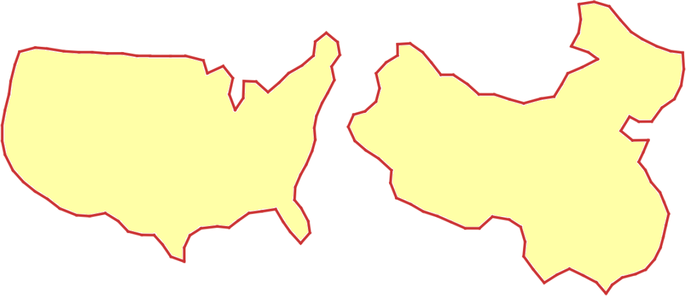
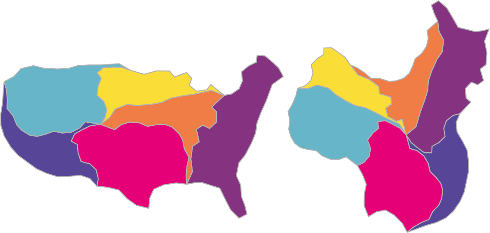
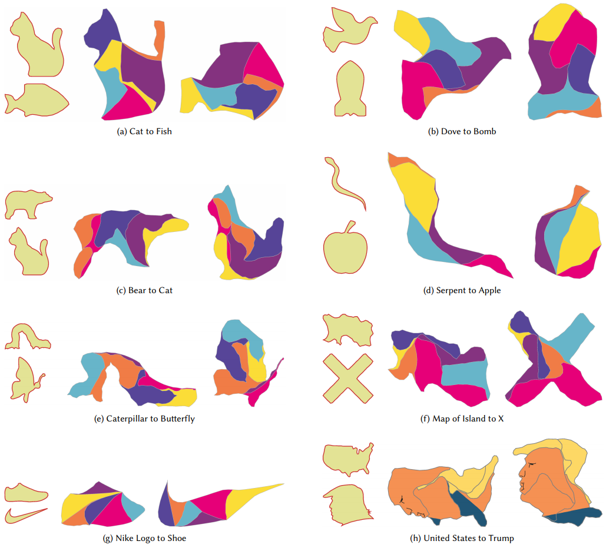

hide forever |
hide once
hide forever |
hide once
Approximate Dissections
Noah Duncan1 |
Lap-Fai Yu2 |
Sai-Kit Yeung3 |
Demetri Terzopoulos1 |
1University of California, Los Angeles |
2University of Massachusetts Boston |
3Singapore University of Technology and Design |
 |
 |
|
Input Shapes |
Output Dissection |
Abstract A geometric dissection is a set of pieces which can be assembled in different ways to form distinct shapes. Dissections are used as recreational puzzles because it is striking when a single set of pieces can construct highly different forms. Existing techniques for creating dissections find pieces that reconstruct two input shapes exactly. Unfortunately, these methods only support simple, abstract shapes because an excessive number of pieces may be needed to reconstruct more complex, naturalistic shapes. We introduce a dissection design technique which supports such shapes by only requiring that the pieces reconstruct the shapes approximately. We find that in most cases, a small number of pieces suffices to tightly approximate the input shapes. We frame the search for a viable dissection as a combinatorial optimization problem, where the goal is to search for the best approximation to the input shapes using a given number of pieces. We find a lower bound on the tightness of the approximation for a partial dissection solution, which allows us to prune the search space and makes the problem tractable. We demonstrate our approach on several challenging examples, showing that it can create dissections between shapes of greater complexity than those supported by previous techniques.
Keywords: : computational geometry, dissection
Approximate Dissections
Noah Duncan,
Lap-Fai Yu,
Sai-Kit Yeung
Demetri Terzopoulos
ACM Transactions on Graphics (Proceeding of SIGGRAPH ASIA 2017)
Paper, Video
We thank Michael S. Brown for narrating the video and Quang Trung Truong for assistance in fabricating the results. Yu was supported in part by National Science Foundation award number 1565978 and by the Joseph P. Healey Research Grant Program provided by the Office of the Vice Provost for Research and Strategic Initiatives and by the Dean of Graduate Studies of UMass Boston. Yeung was supported in part by Singapore MOE Academic Research Fund MOE2016-T2-2-154 and by a grant from the National Heritage Board of Singapore. Duncan was supported in part by the SUTD Digital Manufacturing and Design (DManD) Centre, which is supported by the National Research Foundation (NRF) of Singapore. This research was also supported by the NRF under its IDM Futures Funding Initiative and Virtual Singapore Award No. NRF2015VSG-AA3DCM001-014. We are grateful to the anonymous reviewers for their constructive comments
|  |
|---|